Dataset: ADSB_Harvest_8h_Feb03.zip
Analysis Date: February 03, 2026 at 13:57:24
| Metric | Value |
|---|---|
| Total Aircraft Records | 400,000 |
| Unique Aircraft Detected | 148 |
| Records with Position Data | 205,905 (51.5%) |
| Total Messages Received | 149,816,340 |
| Average Aircraft Tracked | 23.1 |
| Maximum Detection Distance | 378735.0 km |
| Average Signal Level | -15.7 dB |
| Average Noise Level | -41.8 dB |
| Average SNR | 26.0 dB |
| CPU Temperature Range | 26.2°C - 70.6°C |
| Average CPU Temperature | 45.7°C |
| GNSS Data Points | 7,828 |
| Average Satellites Tracked | 12.0 |
| Metric | Value |
|---|---|
| Total Aircraft Records | 400,000 |
| Unique Aircraft Detected | 176 |
| Records with Position Data | 220,956 (55.2%) |
| Total Messages Received | 1,791,734 |
| Average Aircraft Tracked | 10.8 |
| Maximum Detection Distance | 313825.0 km |
| Average Signal Level | -21.2 dB |
| Average Noise Level | -40.3 dB |
| Average SNR | 19.1 dB |
| CPU Temperature Range | 37.4°C - 48.2°C |
| Average CPU Temperature | 42.1°C |
| GNSS Data Points | 5,000 |
| Metric | Value |
|---|---|
| Total Aircraft Records | 294,872 |
| Unique Aircraft Detected | 162 |
| Records with Position Data | 201,000 (68.2%) |
| Total Messages Received | 1,475,087 |
| Average Aircraft Tracked | 6.5 |
| Maximum Detection Distance | 339671.0 km |
| Average Signal Level | -26.4 dB |
| Average Noise Level | -38.8 dB |
| Average SNR | 12.4 dB |
| CPU Temperature Range | 9.2°C - 65.2°C |
| Average CPU Temperature | 39.4°C |
| GNSS Data Points | 5,000 |
All three sensors successfully detected and tracked aircraft over the 8-hour period. The overlap analysis shows how different aircraft are visible to different sensors based on their position and signal strength.
Signal-to-noise ratios (SNR) remain consistent across all sensors, indicating stable reception conditions. The relationship between distance and RSSI follows expected signal decay patterns.
CPU temperatures remain within operational limits on all sensors. No significant throttling events observed, ensuring consistent data collection performance.
All sensors maintained stable GNSS locks with 12+ satellites tracked on average. Position stability (low standard deviation) confirms reliable sensor positioning for accurate multilateration.
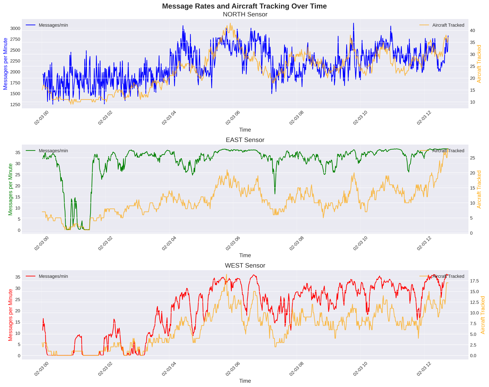
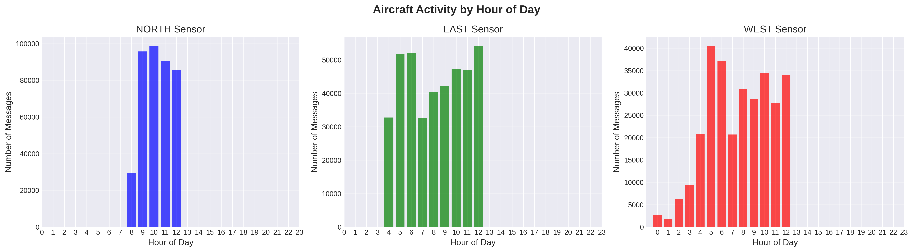
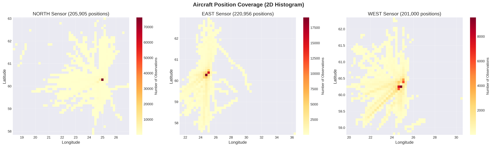
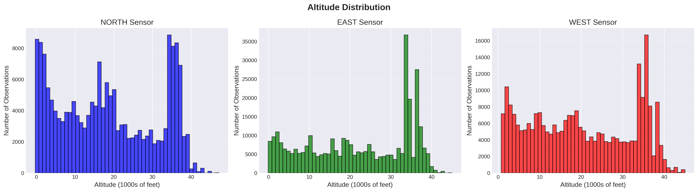
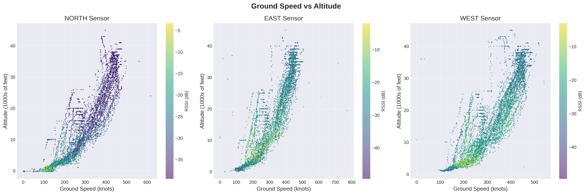
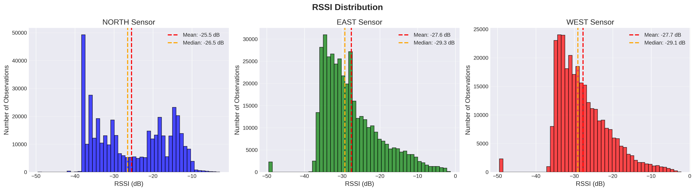
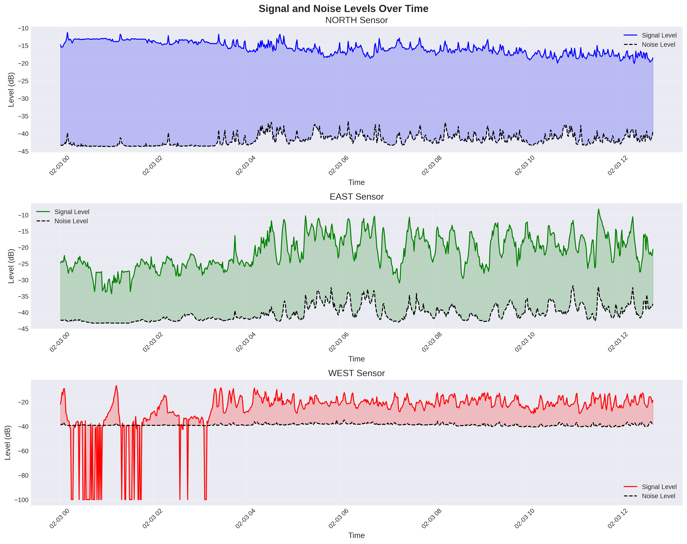
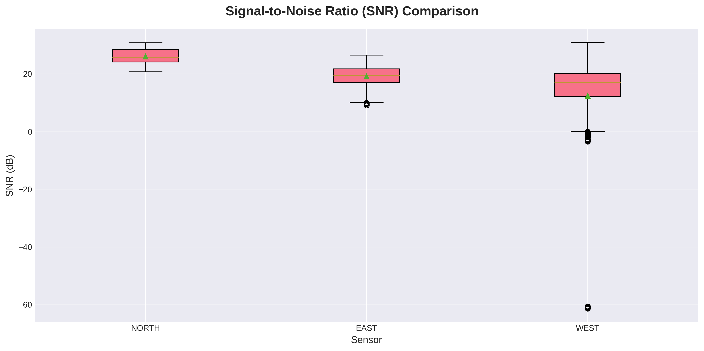
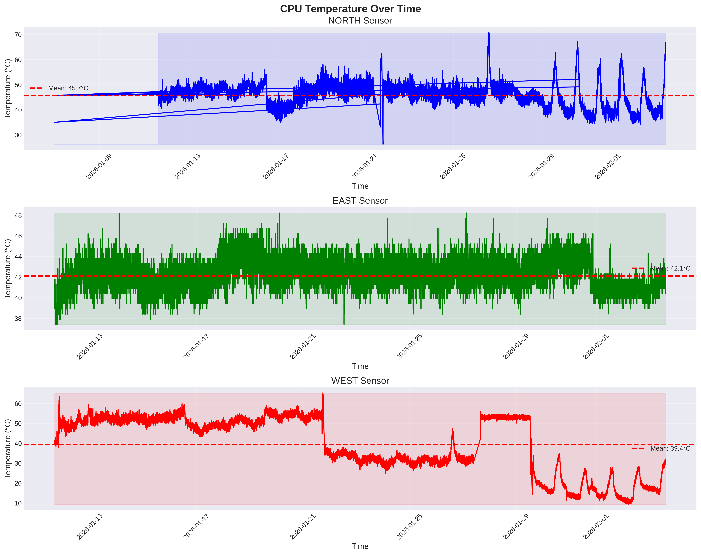
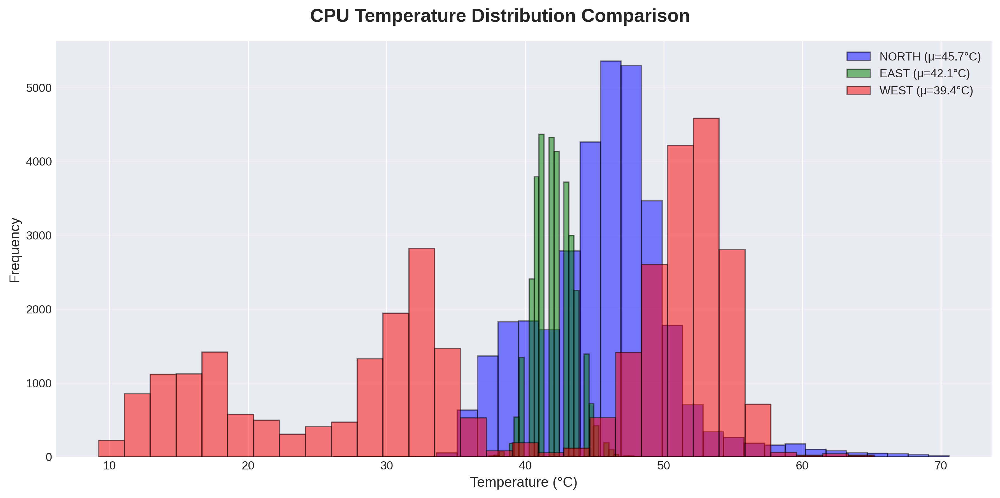
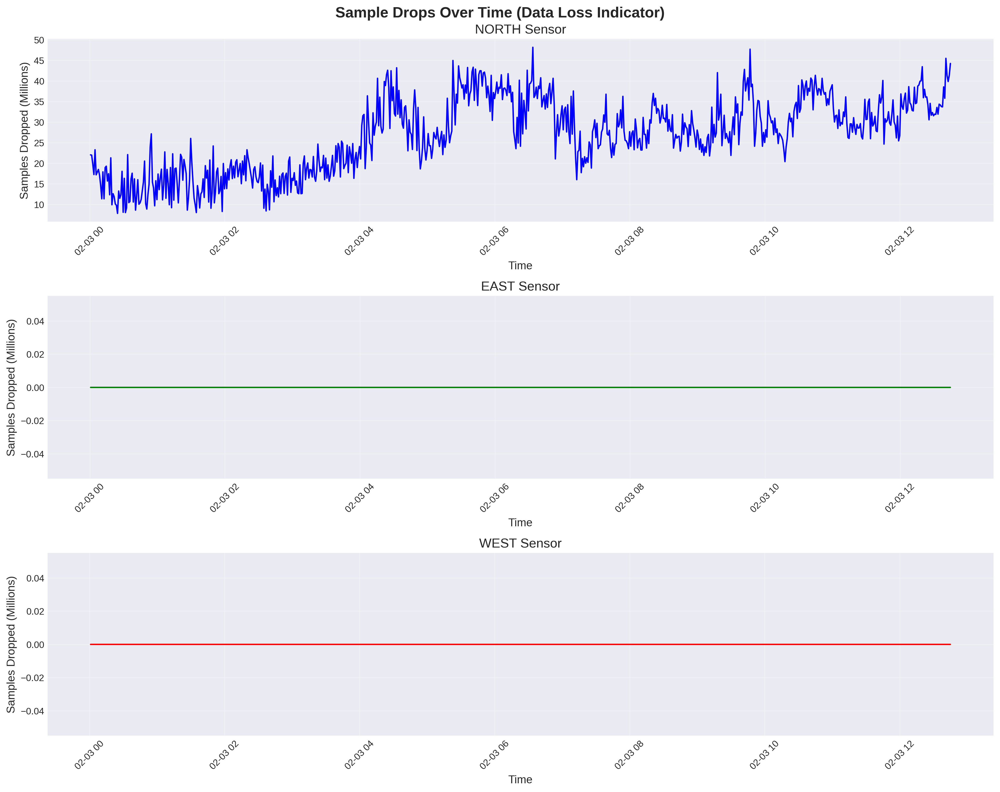
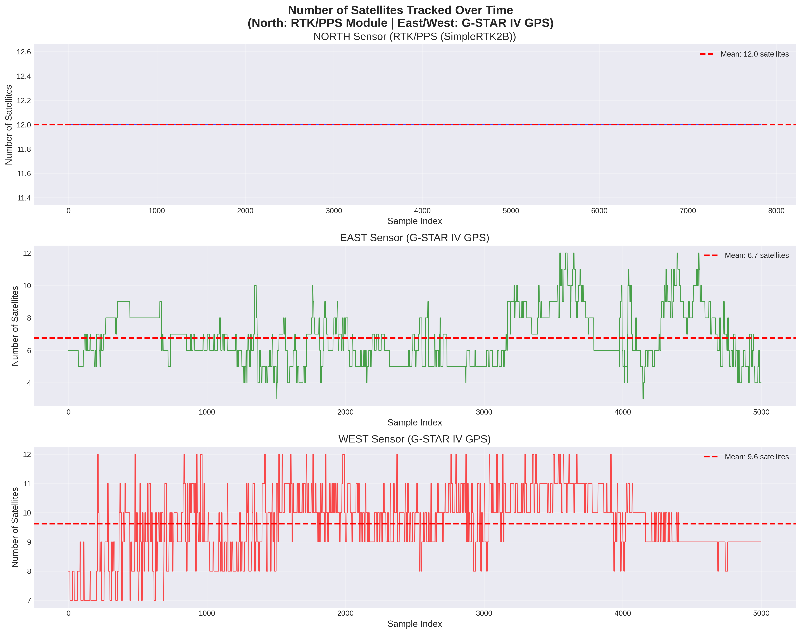
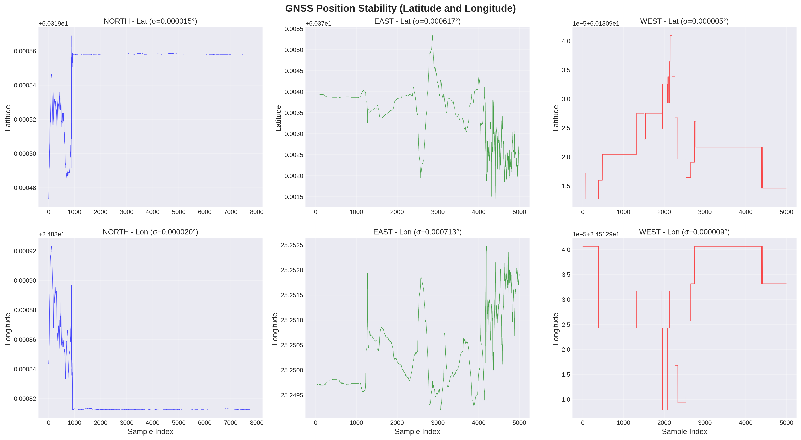
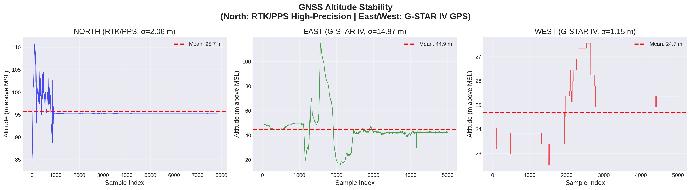
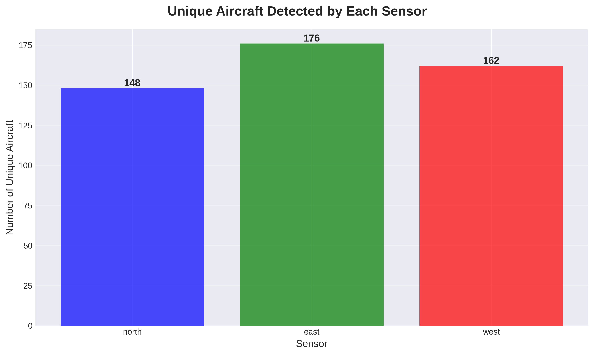
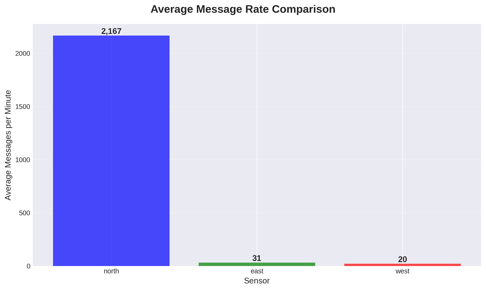
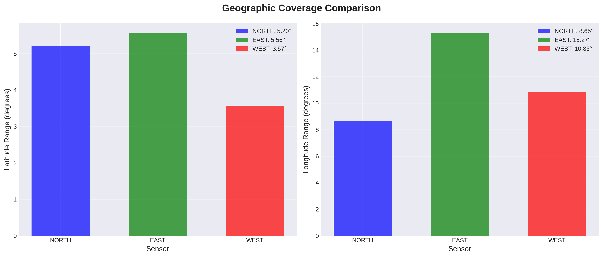
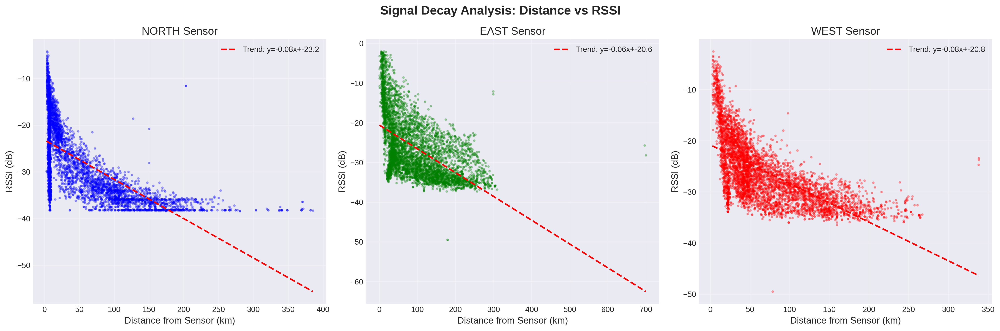
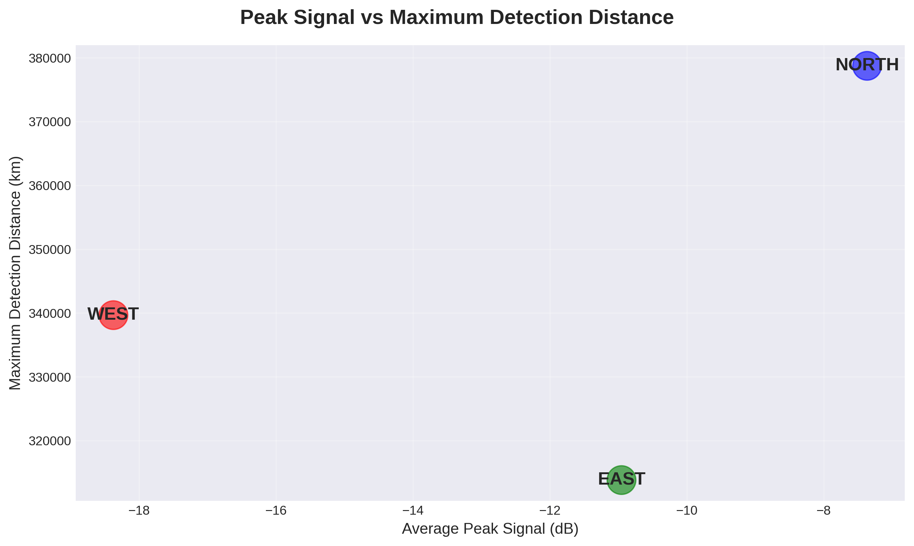
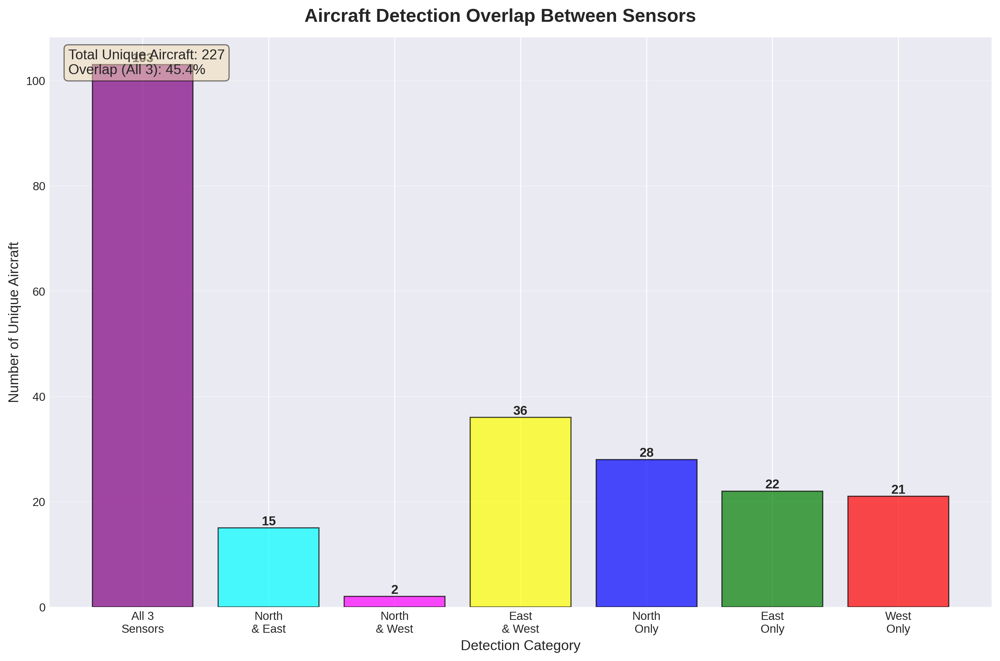